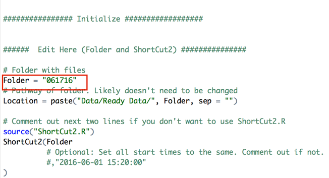
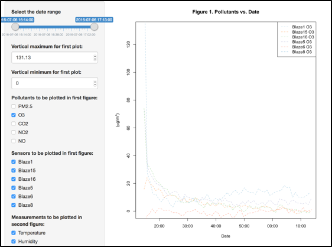

Low-Cost Air Quality Monitoring Packages
Developed by Mike Bergin Lab at Duke University
Steps for Assembling and Preparing Sensor Packages for Use #back to top
A. Board assembly and case preparation
- Order printed circuit boards. We used Power Design Services, a company based in California, and worked with Huiling Pan (email: huiling.pan@powerdesignservices.com). We provided the PCB design, as well as a bill of materials (includes the part name, quantity, link to the seller) and they created the boards and soldered many of the parts on for us. It took a few weeks for the boards to come in. If you do not order the PCBs with the parts soldered on, you will need to order the parts separately and solder them on yourself. Note that all components are soldered on to the top side of the board except for the Alphasense headers, which are soldered to the bottom side of the board.
- Using a drill, drill holes in the front of the waterproof case that will house the PCB and sensors. You will need a hole for the PM sensor, a hole for the USB-to-barrel jack cord, a few small holes to increase airflow, and holes for the Alphasense gas sensors if those are to be included.
- Put Velcro on the bottom of the PM sensor, and on the inside of the case where the PM sensor will sit – this ensures that the inlet for the PM sensor aligns with the hole in the case.
- Plug the Plantower PM sensor into the header on the PCB. The white part on the Plantower wiring switchboard should be facing towards the Teensy.
Figure 2: Holes that need to be drilled in the waterproof case
Figure 3: Sensor box with Plantower PM sensor plugged in (circled).
B. SD Card Programming
- Label the SD cards so that you can tell which SD card belongs with which sensor package. You can either do this by writing directly on the SD card using permanent marker (I recommend silver for better visibility) or by attaching a tape label to the SD card, as we have done in Figure 3.
-
Upload the three files provided to the SD card (“CALI.txt”, “TEENSY.txt” and “LAB.txt”). Open all files. The first line in the “CALI.txt” file contains the box label, formatted as “BoxXX_XX_XX_XX”. You will need to change this box label so that it reflects the sensors that are being used. After the box label, this file contains the electronic zero voltage and sensitivity constants from the Alphasense company that correspond to the individual Alphasense sensors, formatted as “BoxNumber WEZeroNO AEZeroNO sensitivityNO WEZeroCO AEZeroCO sensitivityCO WEZeroNO2 AEZeroNO2 sensitivityNO2 WEZeroO3 AEZeroO3 auxNO2O3 sensitivityO3”. These numbers are from the Alphasense calibration data sheets. Here is a sample “CALI.txt” file:
Box01_51_01_00 Box51 300 300 0.500 300 300 0.500 299 303 0.249 375 403 0.323 0.334
The box label numbers correspond to the Teensy, Alphasense, PM and CO2 sensors, respectively. When data are recorded to the SD card, this box label will be printed out in the header of the “TEENSY.txt” file. The Teensy number is identical to the PM number, and should be written on the PM sensor fan. The Alphasense number is the last two digits found on the white tag on the green Alphasense circuit board (Figure 4). If you are not using Alphasense sensors in your package, you will still need to include an Alphasense number in the box number (you can use “01”). This Alphasense number is used to specify which factory calibrations, included in the “CALI.txt” file, are applied to your raw Alphasense readings. The CO2 number should be recorded on a piece of tape that you place on the Cozir CO2 sensor. If there is no CO2 sensor present, put “00” as the two-digit number. This labeling of the sensors allows us to keep track of sensor package components that are causing problems, and to make sure any appropriate calibrations are applied.
Figure 4: The box label for this sensor would read "Box16_42_16_00”
The “LAB.txt” file contains calibration constants calculated in the lab for the sensors. For example, if you run a chamber test and estimate a slope and intercept by comparing your sensor data to a Dustrak or other reference sensor, you can include the calibration constants for that relationship here. Here is a sample “LAB.txt” file:
NO 1 0
NO2 1 0
O3 1 0
CO2 1 0
TPM25 1 0
PM25 1 0Each row is formatted as “Sensor m b” where m is the first order coefficient and b is the zeroth order coefficient. If you have not calibrated your sensors, leave these values as “1 0”, as shown above.
NOTE: If both “CALI.txt” and “LAB.txt” files are not on the SD card, the sensor will not run and log data. If there is no Plantower sensor connected to your PCB, the package will not log data. However, if there are no gas sensors (Alphasense and/or CO2), plugged in the package will continue to log data, although the values in the gas pollutant data columns are nonsensical and should be ignored.
-
Once all three files are on the SD card, put the SD card back in the SD card reader in the sensor package.
The “TEENSY.txt” file contains all of the data that have been logged to the SD card. All data are recorded in one file. Each time the teensy is powered on again (either by plugging the teensy itself in, or by connecting the package to power using the barrel jack) a new header will be printed to the file. Following the header, minute-averaged (or whatever time frame you have specified in the teensy code) data will be recorded. The newest data are always added to the bottom of the file.
This is a sample header:
Box01_34_01_04
...New Logging Session...2016/7/11, 16:0:7,The next line in the text file labels all of the columns. This is a list of the columns:
yyyy/mm/dd, hh:mm:ss, timeElapsed, TPM1, TPM2.5, TPM10, PM1, PM2.5, PM10, CO2, TempC, Humidity, NO, NO2, O3, CO2raw, workNO2, auxNO2, workO3, auxO3, labNO, labNO2, labO3, labCO2, labTPM25, labPM25
The columns “yyyy/mm/dd” and “hh:mm:ss” hold the time stamps of the sensors, while “timeElapsed” represents the time elapsed from the beginning of the logging session in seconds. Each column with a pollutant name contains the readings of that corresponding pollutant. The difference between the “TPM” and “PM” columns is that the “TPM” is PM values calibrated using TSI reference while the “PM” is PM values calibrated using atmospheric reference. The “work” and “aux” values are readings from their corresponding Alphasense work and auxiliary pins, respectively. These values are used together to calculate the pollutant concentrations. The “lab” values are values calibrated using the calibration constants obtained in lab. Every minute, averages of the data are written in a row to the SD card. This is a sample row of data:
2016/7/11, 16:1:9, 64, 11, 16, 17, 11, 16, 17, 623.84, 23.82, 62.25, 29.13, 26.64, 34.13, 319.09, 92.55, 89.23, 132.26, 124.64, 29.13, 26.64, 34.13, 623.84, 16.00, 16.00
C. Teensy programming
- If you do not already have Arduino/Teensyduino and the necessary libraries on your computer, see Appendix A (for Macs) or Appendix B (for PCs) for installation instructions. I use Arduino version 1.6.8, which is not the current version of Arduino but it works with the code. As our packages use Teensy, you will also need to install Teensyduino - note that with Arduino version 1.6.8, you will need to use Teensy version 1.28.
- Connect the teensy on the PCB to your computer using the microUSB port on the teensy. In Arduino, click “Tools”, and set the board type to Teensy 3.2 / 3.1.
- Open the Blaze air sensor code that you will be using. In the code, find the line RTC.adjust(DateTime(__DATE__, __TIME__)); If this line is commented out (using “//”), remove the back slashes. Upload the code to the teensy. The teensy will use whatever time your computer is running on currently to set the clock – if you would like to program the package for use in another time zone, you will need to first set your computer clock time to that time zone.
- Once you have uploaded the code, comment out (i.e., add “//” at the beginning of the RTC.adjust line) and re-upload the code.
- With the Teensy still connected to your computer, look in the “Tools” tab and open the “Serial monitor”. You should be able to see the data being read in real-time. As the data appear, check if the date and time are correct. This also allows you to get a sense of whether the data look reasonable. Note that data will appear every second, but the data being stored to the SD card are averaged each minute. Note also that the SD card must be programmed prior to running the code, otherwise the sensor will not log data. Every time you plug the sensor package in the LED will flicker red on start-up and then remain solid, as it starts to record data. Every time (e.g., every minute) data are recorded to the SD card the LED should flicker again.
D. Sensor Testing
- Once you think you have the sensors working, you should test them over an extended period of time. Co-locate your sensors (close to a reference instrument if available), and let them run for a few hours, or longer. Make sure that when you lug them in the red LED flashes and then remains on, but blinks every minute, indicating that data are being logged. If LED is flashing, ensure the SD card is properly inserted and try disconnecting the power source (wall or battery) and then reconnecting.
- Download the data. Remove the SD card from the package and download the files to your computer. Do not delete the files on the SD card. Replace the SD card and restart the teensy by disconnecting and reconnecting power. NOTE: Each SD card belongs with a specific sensor please make sure the number on the SD card matches the box number. You can also find the box number by opening the files on the SD card.
- Check the data to make sure all values seem appropriate, and that the time and date are correct. You can quickly glance at the data in the “TEENSY.txt” file, but a better way to identify problems is to plot the data (e.g., using the Plotter app in Rstudio). If you look at the instantaneous values being reported by the Arduino serial monitor there will be noise and values will be inconsistent. This may be true with some of the 1-minute average values recorded as well especially for the Alphasense gas phase sensors (O3, NO, NO2). PM2.5 indoors in the US is often below 10 µg m-3. Outdoors in India it can be up to a few hundred µg m-3. CO2 is about 400ppm globally but can be much higher near sources of combustion and especially in closed rooms since people exhale high concentrations of CO2. The COZIR sensor we use measures up to a maximum of 2000ppm. There is still some uncertainty with the values reported by the O3, NO, and NO2 sensors so values cannot yet be compared with ambient concentrations. You can visualize the data from the teensy file using the R application to plot PM (or other pollutants), and temperature and humidity. If collocated, we expect minimal variation in the data recorded by the sensors. To quickly view the data from multiple sensors simultaneously, use the “Plotter” app in RStudio. If you do not yet have R and Shiny installed on your computer, see Appendix C.
- Once you have uploaded the code, comment out (i.e., add “//” at the beginning of the RTC.adjust line) and re-upload the code.
- With the Teensy still connected to your computer, look in the “Tools” tab and open the “Serial monitor”. You should be able to see the data being read in real-time. As the data appear, check if the date and time are correct. This also allows you to get a sense of whether the data look reasonable. Note that data will appear every second, but the data being stored to the SD card are averaged each minute. Note also that the SD card must be programmed prior to running the code, otherwise the sensor will not log data. Every time you plug the sensor package in the LED will flicker red on start-up and then remain solid, as it starts to record data. Every time (e.g., every minute) data are recorded to the SD card the LED should flicker again.
Using the Plotter App
- Open "Plotter" folder
- Download the data. Remove the SD card from the package and download the files to your computer. Do not delete the files on the SD card. Replace the SD card and restart the teensy by disconnecting and reconnecting power. NOTE: Each SD card belongs with a specific sensor please make sure the number on the SD card matches the box number. You can also find the box number by opening the files on the SD card.
- In the folder “Raw Data”, place the folder whose files are to be calibrated. This folder should be named based on the site location and date data was collected for example: “Indoor_home4_boxID000000_07312016” In the example below, the user created folder “061716” to hold the sensor file(s).
- Open app.R in “Plotter” folder.
- Type in folder name under “EDIT HERE”. In the example below, the folder name is “061716”. 
- Click “run app” button at the top of the browser.
- The app interface should look similar to the following: From here you can visualize different pollutants from different packages. Use the top slider bar to select your desired time period. The bottom plot shows temperature and RH for comparison. 
Using the Calibrator App (used to calibrate sensor data using comparison with a reference monitor):
- Open “Calibrator” folder
- Set this as the working directory.
- In the folder “Raw Data”, place the folder whose files are to be calibrated. Make sure every file is in the folder, including the file that will be used as the reference. In the example below, the user created folder “060116” to hold the sensor files.
- Open app.R in “Calibrator” folder.
- Type in folder name under “EDIT HERE”. In the example below, the folder name is “060116”
- Click “Run App” button at the top of the browser. The csv file with the calibration constants will be placed in “Data>Calibration Constants”.
- The app interface should look similar to the following: